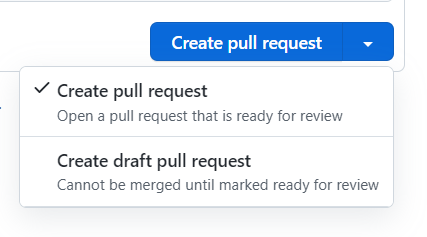
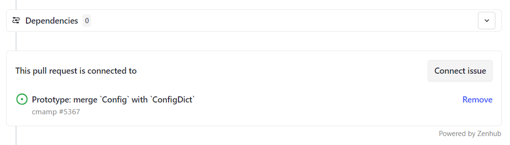

Use Github And Zenhub
Introduction
- In the following we use the abbreviations below:
- GH = GitHub
- ZH = ZenHub
- PR = Pull Request
- RP = Responsible party (aka Team Leader)
- Everything we work on comes in the form of a GH Issues
- We call GH Issues "issues", and "tasks", (sometimes "tickets") interchangeably
- We avoid to call them bugs since many times we use GH to track ideas, activities, and improvements, and not only defects in the code
- We file tasks, prioritize them, and distribute the workload across the team
- We try to always work on high priority (aka, P0) tasks
- We use ZenHub as project management layer on top of GH
- Please install the ZH extension for GH, since it is going to make your life easier
Concepts
Sprints
- Sprints are weekly, Monday - Friday and consist of the Issues worked on during the week
- Sprints help us answer the questions
- What work should the team be focusing during this week?
- What did the team achieve last week?
- Anything worked on during a week is added to that week's Sprint
- Issues added to a Sprint but not worked on or completed during the week should not be removed (Issues can belong to more than one Sprint, and not removing helps measure how “overloaded” a Sprint was)
- Each week's Sprint has Issues added to it by Team Leaders before Monday's work begins
- Every Issue in a Sprint should have
- A point estimate
- An Epic
- The Team Member working on the Issue sets the point estimate by themselves or together with the Team Leader
- Each sprint should have limits based on the estimates. E.g., a sprint cannot have issues worth more than 30 (arbitrary hyper-parameter) story points
- To support adaptability and flexibility, Issues may be added to a Sprint mid-week (but Issues should not be removed). While this may require sacrificing other Issues in the Sprint, the point is to make the trade-off apparent
Epics
- Epics are thematic groups of Issues that are somehow related by their topic
- It may take multiple Sprints to complete all the Issues in an Epic
- Most Epics are created around software components or user workflows (which may cross software components)
- Epics help us answer the questions
- What features is the team implementing?
- What is the team's current focus?
- Epics with a high level of activity are versioned and have a well-defined purpose
- We distinguish Master Epics (e.g.,
WEB3) and sub-Epics (e.g.,WEB3 - DaoCross v0.1) - We maintain all the information about what the Epic is about in its description
- We keep the Epics alphabetized on the board under the pipeline "EPICs"
Master Epics
- Master Epics are long-running Epics (i.e., projects)
- E.g.,
WEB3 - They are capitalized (e.g.,
WEB3and notweb3orWeb3) - Each Issue should belong to at least one Epic, either a sub-Epic or a master Epic
- There is no need to add an Issue to a Master Epic if it is already added to a sub-Epic, since this is handled automatically by ZH
Sub-Epics
- Master Epics can be broken down into smaller Epics, called "sub-Epics"
- E.g.,
WEB3 - DaoCross v0.1 - Their titles should follow the pattern:
XYZ - ABC vM.N, where: XYZ: master Epic title (capitalized)ABC: sub-Epic title (camel case or snake case)vM.N: version- Sub-Epics should have a short title and a smaller scope
- Some sub-Epics are related to short term milestones or releases (e.g.,
WEB3 - DaoCross v0.1), other sub-Epics are for long-running activities (e.g.,WEB3 - DaoCross) - Sub-Epics should belong to a Master Epic in ZH so that querying by Epic and sub-epics is simplified
List of Epics
- Below there is a list of the Epics and sub-Epics
-
For simplicity we keep the information about the Epics here, instead of ZenHub
-
Epics can be determined based on:
- Software components
- E.g.,
COREcovers code under//amp/core - We should try to have a direct mapping between software components and directories
- E.g.,
- Theme
- E.g.,
TRADE_EXECUTIONcovers code related to multiple software components
- E.g.,
- Sometimes an Issue could go in different Epics
- Typically from the Epic should be easy to find the assignee in terms of team leader that can then re-route the Issue to somebody on their team
- Epics can be qualified as
DevorResearchdepending if they are related more to implementation or to research / experimentation
TODO(all): Review and update
BUILD- Description: anything related to the build / regression system
Breaks- Description: Report breaks in the GH action system or locally
- We follow the Buildmeister procedures
GH Actions- Description: Improvements to the build system
CODEBASE- Description: anything that relates to the entire code base
- E.g., a global replace of
actandexp CONFIG- Description: Anything related to
configimplementation CORE- Description: Anything in
//amp/core(but not dataflow) DATAFLOW- Description: Anything related to
//amp/core/dataflow DATAPULL- Description: Everything related to Instrument Master, data extraction, data on-boarding
DEV_TOOLS- Description: Anything related to (non-research) tools we use
DockerThin_env- Description: Anything related to improving the thin env in
dev_scripts/client_setup/
- Description: Anything related to improving the thin env in
DOCS- Description: Anything related to documentation
Publish documentation- Description: Anything related to publishing Google Docs, Markdown to repo
HELPERS- Description: Anything in
//amp/helper HIRING- Anything related to:
- Screening candidates
- Running interviews
- Creating job descriptions
- Finding channels to propagate job descriptions
INFRA/DevOps- Description: Anything related to IT/Cloud infrastructure, code deployment, CI/CD, monitoring, server administration etc.
INVOKE- Description: Anthing related to invoke tasks, their unit testing comes here
LINTER- Description: Issues related to the
linter MARKETING- Description: Issues related to promoting our product, e.g.,
- Prepare a demo of the production system
- Prepare pnl / trades data and send it to investors
- Prepare a power-point presentation for investors
MARKET_DATA- Description: anything related to MarketData
MODELAlpha research- Specific research tasks that we want to perform (e.g., "test the foobar hypothesis")
- Multiple implementation issues can be filed to support performing a certain research task (e.g., "implement this and that")
Backtesting- Run experiments about existing alpha models (e.g., tuning parameters, portfolio construction)
-
Flows for backtesting alpha ››
- Flow for backtesting portfolio construction
- Backtests and analysis for candidate models
Deployment- It includes reconciliation, monitoring
- Flows for deploying models from research to production
- Support for testing model config changes in production
- Model reconciliation
- Pipeline failure debugging
Exploratory research- E.g., build a notebook about some stylized facts about prices, model
ON-BOARDING- Description: Issues related to on-boarding new team members and improvements to the on-boarding process
OPTIMIZERDev- Features and config for optimizer
- Optimizer testing
ResearchPROCESS- Description: Anything meta (e.g., conventions)
EpicMeister- Description: Anything related to improving the epicmeister process
PROD- Description: Anything related to releasing to production
TRADE_EXECUTIONDev- Description: it's about anything related to software engineering (e.g., implementation of new features, adding testing, fixing bugs, refactoring)
- E.g., create a new broker
Research- Description: i.e., data science on execution experiment
- E.g., notebooks about bid / ask
UNIVERSE- Description: Related to on-boarding / exploring a new universe
WEB3- Description: Anything related to Web3 tasks
ArbitrageTulipUtils
Issue
- Each Issue is a piece of work to be done
- Issues are combined into Epics by topic
- An Issue has certain characteristics, i.e. labels
- An Issue has a progress status, i.e. ZH pipeline (e.g.,
Product backlog (P1),In progress,Done/Pre-prod) - PRs are linked to work needed to complete an Issue
- An issue might not have an assignee and estimate if it is not inside an epic but before execution of course it needs to be resolved
Milestone
- Milestone consist of group of tasks we want to accomplish during certain period
- We plan for milestone in advance and every milestone is 4 to 5 months long
- We select Epics to work on in the particular milestone, add issues to it and assign a start date and an estimated end date to the epic
- Every Epic, pre-planned or newly filed, must have an estimated start and end date if it belongs to current milestone
- Epics can also have dates from future as well to get clear estimation of the milestone
- Not having a start and end date to an Epic is fine if it does not belong to the current milestone
Label
- Labels are attributes of an issue (or PR), e.g.,
good first issue,PR_for_reviewers,duplicate, etc. - See the current list of labels and their descriptions are Sorrentum and cmamp
- The repos should always have labels in sync
List of labels
Blocking: This issue needs to be worked on immediatelyBug: Something isn't workingCleanup:DesignDocumentation: Improvements or additions to documentationEnhancement: New feature or requestEpicgood first issue: Good for newcomersTODO(gp):
Good_first_issueOutsource: Anybody can do itP0: Issue with a high priorityP1: Issue is important but has less priorityP2: Issue whcih is not urgent and has the lowest priortyPaused: An issue was started and then stoppedPR_for_authors: The PR needs authors to make changesPR_for_reviewers: The PR needs to be reviewed by team leadersTODO(gp): ->
PR_for_team_leadersPR_for_integrators: The PR needs to be reviewed by Integrators and possibly mergedReadings: Reading a book, article and getting familiar with codeTo close: An issue can be potentially closedTODO(gp): -> To_close
Pipeline
- A ZH Pipeline represents the "progress" status of an Issue in our process
- We have the following Pipelines on the ZH board:
Product Backlog- Issues which are new and do not belong to current sprint
estimateis not mandatory- It should at least have Master
EPIC(e.g.,INFRA), not necessarily but preferred sub-EPIC (e.g.,INFRA - DevOps) assigneeshould be the tech lead of that area
Sprint Backlog- Issues that should be executed in the this sprint
- It must have an
assignee,epic,sprintandestimate
In Progress- Issues that we are currently working on
Review/QA> TODO(gp): Let's split Review and QA?- Issues opened for review and testing
- Code is ready to be merged pending feedback
- Code is ready to be deployed to pre-production
Done/Pre-prod> TODO(gp): Let's split Done and Pre-prod?Done/Pre-prod- Issues that are done and are waiting for closingEpics- Both Master Epics and Sub-Epics
Closed- Issues that are done and don't need a follow-up
- Integrators / team leaders are responsible for closing
stateDiagram
[*] --> Product_Backlog
Product_Backlog --> Sprint_Backlog
Sprint_Backlog --> In_Progress
In_Progress --> QA
QA --> Done
In_Progress --> Pre_prod
Pre_prod --> Prod
Prod --> Done
Done --> [*]
Issue Estimate
- The Issue estimates ranges from 1 to 5:
- 1 (e.g., a function rename, updating the entire code base and the unit tests)
- 2 (e.g., factoring out a method)
- 3 (e.g., write a unit test for an existing function)
- 4 (e.g., implement a new feature, where the solution is clear in advance)
- 5 (e.g., implement a new feature, where the solution is complex)
PR
- A pull request is an event where a contributor asks to review code they want to merge into a project
Issue workflows
Naming an Issue
- Use an informative description, typically in the form an action
- E.g., "Do this and that"
- We don't use a period at the end of the title
- We prefer to avoid too much capitalization to make the Issue title easy to read and for consistency with the rest of the bugs
Good
Optimize Prometheus configuration for enhanced Kubernetes monitoring
Bad
Optimize Prometheus Configuration for Enhanced Kubernetes Monitoring
- They are equivalent, but the first one is more readable
Filing a new issue
- If it is a "serious" problem (bug) put as much information about the Issue as possible, e.g.,:
- What you are trying to achieve
- Command line you ran, e.g.,
> i lint -f defi/tulip/test/test_dao_cross_sol.py - Copy-paste the error and the stack trace from the command line, no
screenshots, e.g.,
Traceback (most recent call last): File "/venv/bin/invoke", line 8, in <module> sys.exit(program.run()) File "/venv/lib/python3.8/site-packages/invoke/program.py", line 373, in run self.parse_collection() ValueError: One and only one set-up config should be true: - The log of the run
- Maybe the same run using
-v DEBUGto get more info on the problem
- Maybe the same run using
- What the problem is
- Why the outcome is different from what you expected
- Issue in the current sprint cannot be
P1becauseP0is a sprint backlog and an issue is not in a sprint backlog, it should not be in a sprint. - Use check boxes for "small" actions that need to be tracked in the Issue (not worth their own Issue)
- An issue should be closed only after all the checkboxes have been addressed OR the remaining checkboxes were either transformed into new issues in their own right (e.g. if the implementation turned out to be more complex than initially thought) OR have a reason for not being implemented
- These things should be mentioned explictly before closing the issue (Element of Least Surprise.).
- We use the
FYI @...syntax to add "watchers" - E.g.,
FYI @cryptomtcso that he receives notifications for this issue - Authors and assignees receive all the emails in any case
- In general everybody should be subscribed to receiving all the notifications and you can quickly go through them to know what's happening around you
- Assign an Issue to the right person for re-routing
- There should be a single assignee to a Issue so we know who needs to do the work
- Assign Integrators / Team leaders if not sure
- Assign an Issue to one of the pipelines, ideally based on the urgency
- If you are not sure, leave it unassigned but
@tagIntegrators / team leaders to make sure we can take care of it - Assign an Issue to the right Epic and Label
- Use
Blockinglabel when an issue needs to be handled immediately, i.e. it prevents you from making progress - If you are unsure then you can leave it empty, but
@tagIntegrator / team leaders to make sure we can re-route and improve the Epics/Labels
Updating an issue
- For large or complex Issues, there should be a design phase (in the form of GH Issue, Google Doc, or design PR) before starting to write a code
- A team leader / integrator should review the design
- When you start working on an Issue, move it to the
In Progresspipeline on ZH - Try to use
In Progressonly for Issues you are actively working on - A rule of thumb is that you should not have more than 2-3
In ProgressIssues - Give priority to Issues that are close to being completed, rather than starting a new Issue
- Update an Issue on GH often, like at least once a day of work
- Show the progress to the team with quick updates
- Update your Issue with pointers to gdocs, PRs, notebooks
- If you have questions, post them on the bug and tag people
- Once the task, in your opinion, is done, move an issue to
Review/QApipeline so that Integrator / team leaders can review it - If we decide to stop the work, add a
Pausedlabel and move it back to the backlog, e.g.,Sprint backlog (P0),Product backlog (P1),Icebox (P2)
Closing an issue
- A task is closed when PR has been reviewed and merged into
master - When, in your opinion, there is no more work to be done on your side on an
Issue, please move it to the
Done/Pre-prodorReview/QApipeline, but do not close it - Integrators / team leaders will close it after review
- If you made specific assumptions, or if there are loose ends, etc., add a
TODO(user)or file a follow-up Issue - Done means that something is "DONE", not "99% done"
- "DONE" means that the code is tested, readable, and usable by other teammates
- Together we can decide that 99% done is good enough, but it should be a conscious decision and not comes as a surprise
- There should be a reason when closing an issue
- E.g. - closing as PR is merged
- E.g. - closing since obsolete
PR workflows
PR labels
PR_for_authors- There are changes to be addressed by an author of a PR
PR_for_reviewers- PR is ready for review by team leaders
PR_for_integrators- PR is ready for the final round of review by Integrators, i.e. close to merge
Filing a new PR
General tips
- Implement a feature in a branch (not
master), once it is ready for review push it and file a PR via GH interface - We have
invoketasks to automate some of these tasks: ```i git_branch_create -i 828 i git_branch_create -b Cmamp723_hello_world i gh_create_pr ```
- If you want to make sure you are going in a right direction or just to confirm the interfaces you can also file a PR to discuss
- Mark PR as draft if it is not ready, use the
convert to draftbutton -
Draft PR should be filed when there is something to discuss with and demonstrate to the reviewer, but the feature is not completely implemented

Filing process
- Add a description to help reviewers to understand what it is about and what you want the focus to be
- Add a pointer in the description to the issue that PR is related to - this will ease the GH navigation for you and reviewers
- Leave the assignee field empty
- This will be done by team leaders
- Add reviewers to the reviewers list
- For optional review just do
@FYIperson_namein the description - Add a corresponding label
- Usually the first label in the filed PR is
PR_for_reviewers - If it is urgent/blocking, use the
Blockinglabel - Make sure that the corresponding tests pass
- Always lint before asking for a review
- Link a PR to an issue via ZH plugin feature 
- If the output is a notebook:
- Publish a notebook, see here
- Attach a command line to open a published notebook, see here
Review
- A reviewer should check the code:
- Architecture
- Conformity with specs
- Code style conventions
- Interfaces
- Mistakes
- Readability
- There are 2 possible outcomes of a review:
- There are changes to be addressed by author
- A reviewer leaves comments to the code
- Marks PR as
PR_for_authors
- A PR is ready to be merged:
- Pass it to integrators and mark it as
PR_for_integrators - Usually is placed by team leaders after they approve PR
- Pass it to integrators and mark it as
Addressing comment
- If the reviewer's comment is clear to the author and agreed upon:
- The author addresses the comment with a code change and after changing the
code (everywhere the comment it applies) marks it as
RESOLVEDon the GH interface - Here we trust the authors to do a good job and to not skip / lose comments
- If the comment needs further discussion, the author adds a note explaining why he/she disagrees and the discussion continues until consensus is reached
- Once all comments are addressed:
- Re-request the review
- Mark it as
PR_for_reviewers
Coverage reports in PRs - discussion
-
We should start posting coverage reports in PRs.
-
The suggested process is:
- PR's author posts coverage stats before (from master) and after the changes
in the format below. The report should contain only the files that were
touched in a PR.
- We have
run_coverage_reportinvoke TODO(*): Enable for Sorrentum and add usage examples.- Maybe we can automate it somehow, e.g., with GH actions. But we need to start from something. ``` Name Stmts Miss Branch BrPart Cover
oms/locates.py 7 7 2 0 0% oms/oms_utils.py 34 34 6 0 0% oms/tasks.py 3 3 0 0 0% oms/oms_lib_tasks.py 64 39 2 0 38% oms/order.py 101 30 22 0 64% oms/test/oms_db_helper.py 29 11 2 0 65% oms/api.py 154 47 36 2 70% oms/broker.py 200 31 50 9 81% oms/pnl_simulator.py 326 42 68 8 83% oms/place_orders.py 121 8 18 6 90% oms/portfolio.py 309 21 22 0 92% oms/oms_db.py 47 0 10 3 95% oms/broker_example.py 23 0 4 1 96% oms/mr_market.py 55 1 10 1 97% oms/init.py 0 0 0 0 100% oms/call_optimizer.py 31 0 0 0 100% oms/devops/init.py 0 0 0 0 100% oms/devops/docker_scripts/init.py 0 0 0 0 100% oms/order_example.py 26 0 0 0 100% oms/portfolio_example.py 32 0 0 0 100%
TOTAL 1562 274 252 30 80% ```
- We have
- PR's author also sends a link to S3 with the full html report so that a reviewer can check that the new lines added are covered by the tests